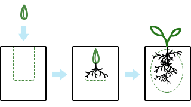
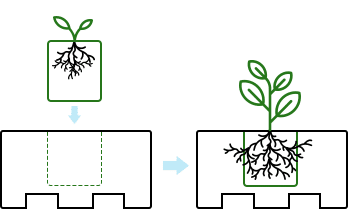
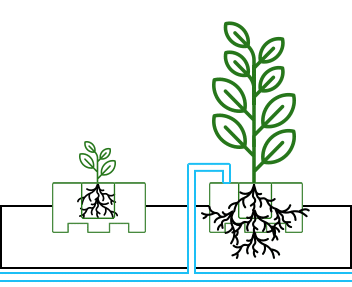
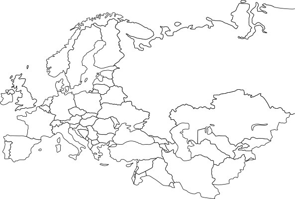
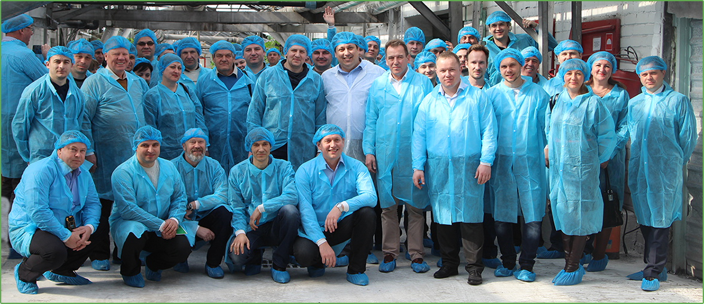

Минераловатный субстрат
для гидропонного выращивания
овощных и цветочных культур
Продукция
Минераловатный мат
Волокна в минераловатных матах расположены преимущественно
хаотично, что придает им высокую жесткость и позволяет использовать более одного оборота. Минераловатный
субстрат Belagro достаточно влагоемкий, что позволяет реже поливать растения и тем самым экономить воду
и удобрения. Уровень ЕС в матах держится стабильно, без резких перепадов, что благоприятно для роста
корней. Субстрат равномерно теряет влагу (усушка) и при правильном поливном режиме в нем создаются все
условия для формирования мощной, хорошо развитой корневой системы. Применяют минераловатный мат как
основную среду корнеобитания. По желанию заказчика возможно изготовление матов нестандартных размеров.
Размеры:
Минераловатный кубик
Минераловатный кубик обеспечивает здоровую корневую систему,
сильное растение с хорошим балансом вегетативного и генеративного развития, легкое управление процессами
роста. Кубики можно использовать как при прямом посеве семян, так и при технологии пикировки, при
которой семена высаживаются сначала в минераловатные пробки, размещенные в кассетах. Кубики
предназначены для выращивания рассады овощных и цветочных культур, изготовлены из гидрофильной
гофрированной минеральной ваты, структура которой обеспечивает особую жесткость и механическую
стабильность кубиков при их смачивании. Преимущественно вертикальное расположение волокон минеральной
ваты, а также наличие дренажных канавок на нижней стороне кубиков и поливочного ринга сверху позволяют
осуществлять выращивание сильной рассады.
Размеры:
Минераловатная пробка
Минераловатную пробку применяют для проращивания семян с
последующей пикировкой в кубик. Для выращивания сеянцев пробки размещаются в стандартных кассетах из
пластика или пенополистирола. Структурная однородность пробок из минеральной ваты делает возможным
равномерное распределение воды, питательных веществ и значения pH. За счет этого достигается более
хорошая всхожесть семян, и саженцы вырастают одинакового размера.
Размеры:
Этапы использования
1
Посев семян,
выращивание сеянцев

2
Пикировка рассады
в кубики

3
Пересадка выращенной
рассады на мат

Особенности
Технология
Минераловатный субстрат производится на современном оборудовании с
использованием европейских технологий - это обеспечивает максимальный контроль качества продукции.
100% экологичный продукт
Основным компонентом сырья для производства минераловатного субстрата
является горная базальтовая порода, благодаря чему субстрат инертен, гидрофилен, не патогенен, не меняет
своих свойств в процессе эксплуатации и не поглощает питательных веществ.
Гарантия качества
Мы постоянно совершенствуем свою продукцию и гарантируем стабильное качество
каждому клиенту, в не зависимости от объема поставок.
Этапы производства
1
Получение силикатного расплава
2
Получение волокна из расплава
3
Подача связуещго раствора

4
Порезка продукции
5
Упаковка ваты
География поставок
Наше предприятие выпускает минеральную вату с 1965 года. В 2005г. АО «Гомельстройматериалы» вышло на
международный рынок с уникальным материалом для теплоизоляции стен и кровли – плитами теплоизоляции,
выполненными из минеральной ваты, под торговой маркой BELTEP.
Плиты выпускаются на современной технологической линии, поставленной чешской машиностроительной компанией «Frydlantske Strojirny — Rasl a syn s.a.», с использованием технологии сухого формования из минеральной ваты и синтетического связующего вещества с водонепроницаемой модифицирующей добавкой.


О компании
Компания Belagro занимается производством субстрата из минеральной ваты, продукция
выпускается на заводе АО «Гомельстройматериалы» г. Гомель, Республика Беларусь. Ассортимент продукции включает
в себя минераловатный мат, кубик и пробку для рассады. Минераловатный субстрат Belagro предназначен для
применения в качестве корневого субстрата для технологии гидропонного выращивания многих видов овощных и
цветочных культур в тепличных комплексах. Минераловатный субстрат Belagro производится с 2006 года, за это
время он был опробован более 100 тепличными комбинатами в Беларуси, Украине, России, Турции, Казахстане,
Узбекистане, Грузии, Армении, Азербайджане. Работа подразделений и служб нашей компании ориентирована на
максимальное удовлетворение спроса потребителей и обеспечение на высшем уровне качества обслуживания клиентов.
Наше технологическое оснащение позволяет легко решать проблемы нестандартных размеров. Высокий уровень
качества, отзывчивость, разумная ценовая политика и оперативная сервисная поддержка позволяют экономить деньги
и время наших клиентов, что и является главным приоритетом нашей деятельности.
Форма обратной связи
Заполните поля, чтобы мы могли связаться с Вами, и выполнить Вашу заявку как можно
быстрее.
© Copyright logo All Rights Reserved